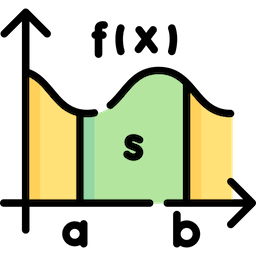

AI Math Basics

AI, short for Artificial Intelligence, is a technology that enables machines to learn patterns from data and make judgments, while mathematics is a precise language for describing patterns and characterizing change.
AI sets the goals, mathematics provides the path to realization — from data representation to model training, mathematics is at work behind every step.
It can be said that mathematics is the skeleton of AI. Without mathematics, AI is just a vague conception. With mathematics, AI can be computed, verified, and truly realized.
This is why understanding AI is inseparable from understanding the mathematics that supports it.
AI Math Basics Related Content
AI Math Basics related content includes the following sections:
- Linear Algebra— The language for describing data. An image, a piece of text, a user profile — all ultimately become vectors or matrices in a computer.
- Calculus— The language for describing change. How does a model learn? By continuously computing gradients and adjusting parameters.
- Probability and Statistics— The language for describing uncertainty. The world is random, data has noise, and a model's output is essentially a probabilistic judgment.
- Information Theory— The language for describing the amount of information. It measures how far predictions deviate from the truth and how much the model has learned.
- Optimization Theory— The language for describing how to find the optimal solution. Training a model is essentially solving an optimization problem.
These five sections are not isolated pieces of knowledge, but an interlocking chain:
Data (Linear Algebra) → Modeling (Probability & Statistics) → Measuring Error (Information Theory) → Solving (Calculus + Optimization)
Every subsequent lecture will keep returning to this chain, helping you map abstract formulas to concrete AI applications.
Why learn this math?
You might ask: now that you can use AI by calling an API, why still learn mathematics?
If you only use AI toolsFrankly, you don't need much math; being able to write prompts and call APIs is enough.
If you want to understand how AI worksthen you need a certain mathematical foundation to know the reasons behind the following questions:
- Why does the loss decrease during model training?
- Why does the model sometimes fail to learn (gradient vanishing/explosion)?
- Why does adjusting the learning rate make training better or worse?
- Why does the Transformer need normalization and use softmax?
The answers to all these whys are hidden in mathematics. Without a mathematical foundation, you can only memorize these phenomena by rote. With the mathematical foundation covered above, you can derive these phenomena.They are bound to happen.。
If you want to create new AI methods,this is where mathematics truly shows its power. Every breakthrough you've heard of—gradient descent, backpropagation, attention mechanisms, diffusion models—originally started with mathematical derivations, and only then code implementation. If you want to do original work, mathematics is the foundation you cannot bypass.
In one sentence: Mathematics is not the decoration of AI, but the skeleton of AI. Code is merely translating mathematics into a language that machines can execute.
Who is this course suitable for?
This course is suitable for the following types of people:
- People who want to transition into AI / algorithms:They need to build a solid foundational base, not just know how to call libraries.
- Current students (computer science, software-related majors):They want to build systematic mathematical intuition early.
- Developers who can already write AI applications but want to understand the "why" behind it:They can run code, but can't understand the formulas when reading papers.
- People who are curious about the underlying principles of AI:They simply want to understand "what AI is really about."
Cases where it's less suitable:If your goal is just to quickly use existing models to meet business needs (e.g., calling large model APIs to write product features), then you may not need to learn this.
What prerequisite knowledge is needed?
Mathematical foundation:
- High school math level is sufficient (knowing how to compute derivatives, and understanding basic set and function concepts is better, but not required).
- No prior study of college linear algebra, calculus, or probability theory is required—the course starts from the most basic definitions.
Programming foundation:
- Able to read and write basic Python code (variables, loops, functions).
- No need to master NumPy in advance—we'll learn it as we use it in the course.
Others:
- A bit of patience is needed: mathematical intuition doesn't develop overnight. It's recommended to follow along with each lecture's exercises—do the calculations by hand and run the code.
- No prior knowledge of AI/machine learning is needed. The course will gradually introduce related concepts while teaching the mathematics.